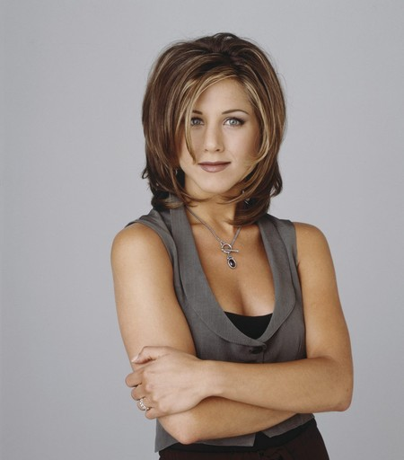

Rachel Green

La personalidad de Rachel se desarrolla durante la serie. Al principio, ella es “la niña malcriada de
papá”, pero más adelante, especialmente después de tener a Emma, se vuelve menos egocéntrica. Sin
embargo, ella sigue siendo la más centrada en la imagen y puede ser egoísta. Un Día de Acción de Gracias
(Temporada 4 en 1998) se revela que Rachel es propensa a cambiar regalos por otros artículos. Se la
describe a menudo como la más popular, pero también como la niña más esnob de la escuela, y que Brad
Pitt (el esposo de Aniston en ese tiempo) incluso estuvo como estrella invitada diciendo que era un niño
obeso de la escuela secundaria, todavía enojado por lo que había pasado con Rachel.
Rachel se operó la nariz cuando era adolescente, según ella debido a una desviación del tabique. Lo
mencionó en una escena retrospectiva del Día de Acción de Gracias de 1987, pero se operó la nariz en
1988. Después de trabajar como camarera, Rachel se animó a usar su interés por la moda para obtener un
trabajo en el mundo de la moda. Su enfoque en esto y en la imagen se produjo a expensas de las
competencias nacionales o conocimiento común, de la que fue burlada por tener poco.